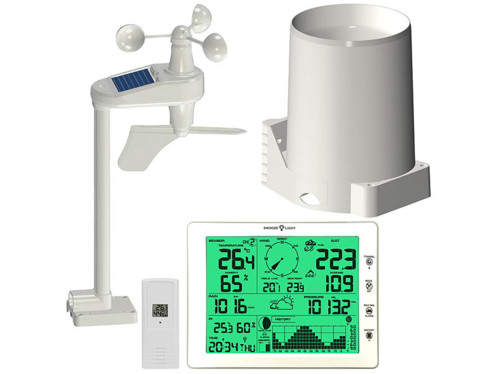
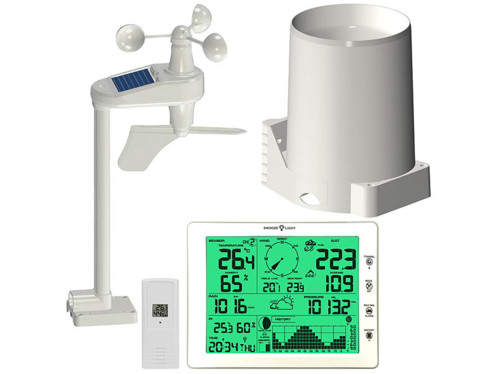

-
Portfolio de Mathieu DUBERNET

Retour d'expérience Projet Biosphère
Projet Odomo
Le projet Odomo consiste à coder individuellement le programme d'une petite centrale domotique, présentée ci-dessous.
 

Document de conception
C'est un projet destinée a programmer une petite station météorologique personnelle. Pour cela, nous codons en Java grâce a Netbeans. J’ai contribuer au code en corrigeant et créant des fonction dans les diverse classe préexistante. Cela ma permis de découvrir le fonctionnement des classe et des objets mais aussi d’approfondir mes connaissance en programmation. J'ai également dû réaliser un document de conception présenter.
Rendu final
Voici le rendu visuel sur lequel j'ai travailler, il est divisé en deux parties, d'abord à gauche, où se trouvent des informations plus générales comme la date et l’heure tout en haut ou encore l’hygrométrie. Puis une deuxième partie où l’on peut se renseigner sur divers éléments comme la programmation du chauffage ou, comme sur le document, l’histogramme de la pluviométrie.